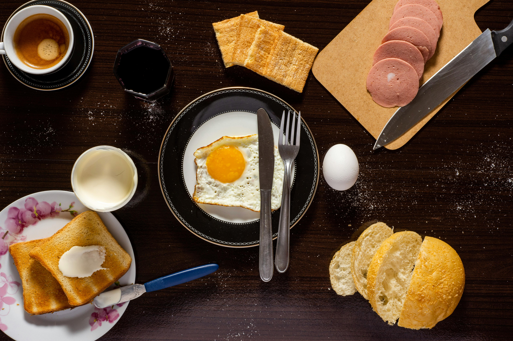
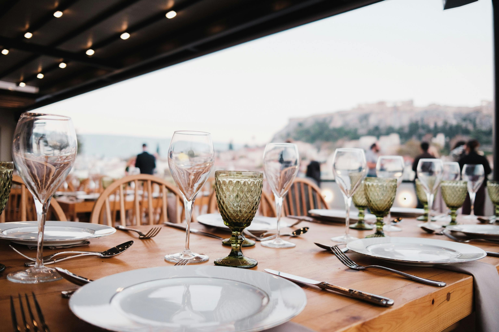
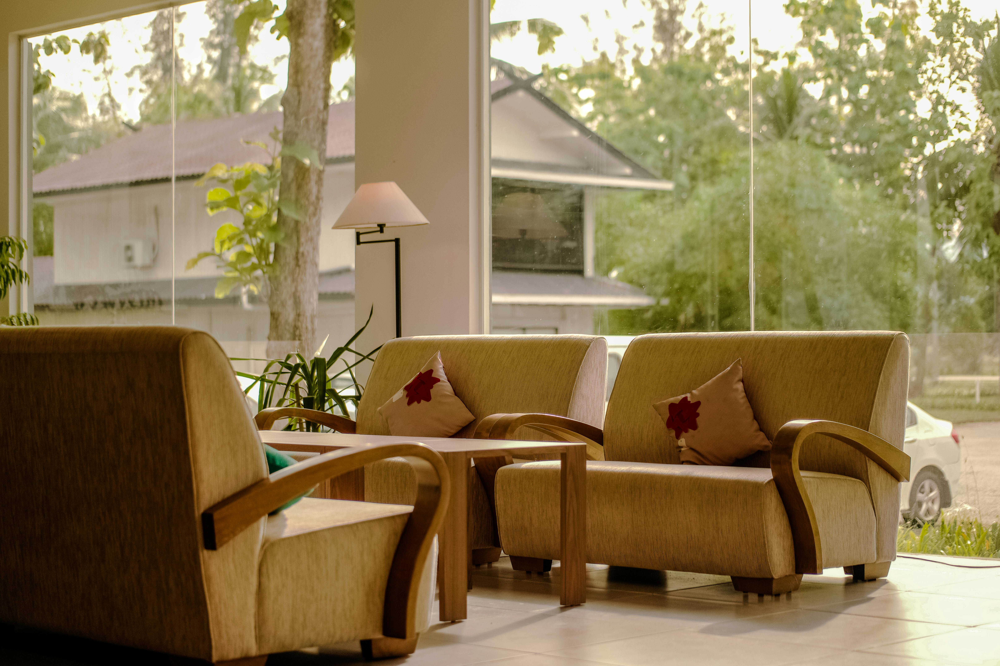

Today's catch
Charcoal-grilled fish, lemon leaf, and whatever the garden is giving.
Fresh from around here
Sea-to-table plates, garden-picked greens, and one more story before you go.
Our kitchen follows the seasons and the shoreline. Think just-caught seafood, sun-warmed produce, small-batch wine, and generous plates made to pass around.
Ask about a tableCome as you are. There is always room for one more at the table.

07:00 — 10:30 / The easy breakfast01
12:00 — 15:00 / Long lunch02 17:30 — 22:00 / Supper by the sea03
17:30 — 22:00 / Supper by the sea03
Until late / One last drink04Our menu changes with the catch and the harvest. Here are a few house favourites.
Charcoal-grilled fish, lemon leaf, and whatever the garden is giving.
Bright herbs, crisp leaves, and ripe fruit from close to home.
A small, changing list of treats best shared over another coffee.
Choose your preferred date, time, and party size. We will confirm your table request.
Find a tableSend us your preferred time and party details. We will confirm your reservation directly; this demo form is not connected to a live table system.